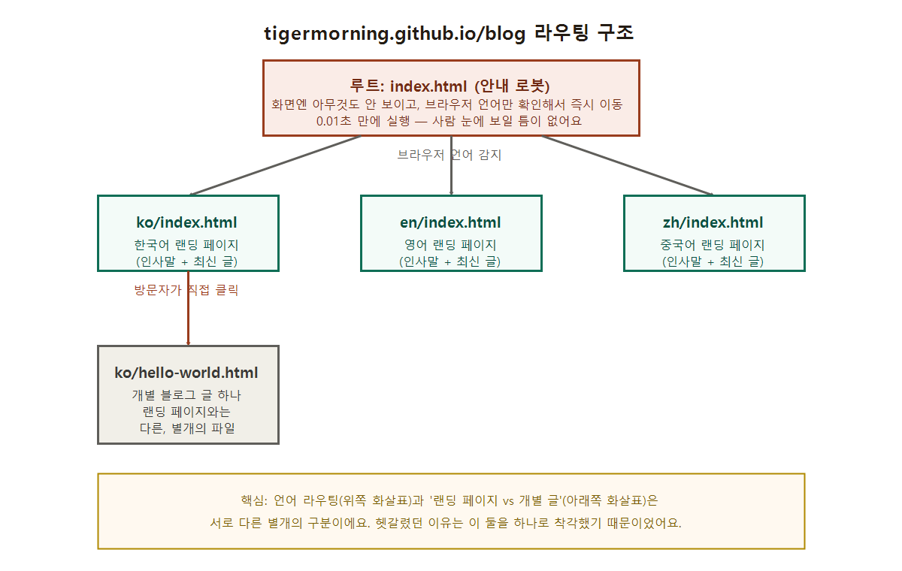

라우팅(Routing)이 뭔가요? — 언어별로 자동 연결되는 원리
2026. 7. 14.
이 블로그를 처음 만들 때, tigermorning.github.io/blog로 들어갔을 때 보이는 화면과 tigermorning.github.io/blog/ko/hello-world.html로 들어갔을 때 보이는 화면이 왜 다른지 한참 헷갈렸어요. "한국어 브라우저면 한국어 페이지로 바로 보내줄 수 없나?"라는 질문도 함께 들었는데, 그 질문에 답하다 보니 라우팅(routing)이라는 개념 자체를 제대로 정리하게 됐어요.
라우팅이란
라우팅은 "어떤 요청이 들어왔을 때, 그걸 어디로 보낼지 정해서 연결해주는 것"을 말해요. 원래는 택배나 통신 회선에서 "가장 좋은 길을 정한다"는 뜻으로 쓰던 말이에요(route = 길, 경로). 웹사이트에서는 "이 주소로 들어온 사람을 어떤 페이지로 데려다줄까"를 결정하는 로직을 라우팅이라고 불러요.
비유하면: 교차로에 서 있는 교통경찰이에요. 차(방문자)가 오면, 그 차의 상태(브라우저 언어)를 보고 "너는 이 길로, 너는 저 길로" 하고 갈 곳을 정해서 보내줘요. 교통경찰 자신은 목적지가 아니라, 목적지로 가는 길을 정해주는 역할만 해요.
제 블로그의 라우팅 구조
제 블로그는 총 네 개의 파일이 이 역할을 나눠서 맡고 있어요.

- 루트(맨 바깥의 index.html): 이건 사람이 읽는 "페이지"가 아니에요. 화면에 아무것도 안 그리고, 접속하는 즉시 "이 브라우저 언어가 뭐지?"만 확인해서 0.01초 만에 다른 곳으로 넘겨버리는 안내 로봇 같은 파일이에요.
tigermorning.github.io/blog로 접속하면 이 파일이 무조건 먼저 실행되지만, 눈에 보일 틈도 없이 바로 다음 단계로 넘어가요. - 언어별 랜딩 페이지 3개:
ko/index.html,en/index.html,zh/index.html이라는, 진짜 인사말이 담긴 페이지가 각 언어 폴더 안에 따로 있어요. 루트가 브라우저 언어를 보고 이 셋 중 하나로 사용자를 데려다줘요. - 개별 글(예: ko/hello-world.html): 랜딩 페이지와는 또 다른, 별개의 파일이에요. 홈페이지 첫 화면과 게시글 하나가 다른 것과 같은, 아주 정상적인 구조예요.
그래서 "한국어면 한국어로 자동 연결"은 이미 되고 있었어요
결국 처음 궁금했던 질문 — "각 언어 사용자에게 바로 그 언어 페이지가 보이게 할 수 없냐" — 의 답은 "이미 그렇게 되고 있다"였어요. 한국어 브라우저로 오면 루트를 거쳐 자동으로 ko/index.html(한국어 랜딩)로 가고, 영어 브라우저면 en/index.html로 가요. 사용자가 언어를 고를 필요도 없고, 이미 그렇게 동작하도록 만들어져 있는 상태였던 거예요.
그럼 왜 처음에 헷갈렸을까요? ko/hello-world.html은 위 그림의 맨 아래 칸, "개별 글" 중 하나였어요. 랜딩 페이지(인사말만 있는 얼굴 역할)와 블로그 글(실제 내용이 있는 포스트)은 원래부터 다른 페이지고, 이건 언어 라우팅 문제가 아니라 그냥 "첫 화면"과 "게시글 하나"가 다른 것뿐이었어요. 라우팅(언어를 보고 갈 곳을 정하는 것)과 "랜딩 페이지 vs 개별 글"(둘 다 이미 도착한 뒤의 별개 구분)을 하나로 착각했던 게 헷갈림의 진짜 원인이었던 거예요.
이 개념은 사실 "바이브 코딩으로 웹 만들기" 시리즈에서 만든 index.html 하나짜리 페이지보다 한 단계 더 큰 이야기예요. 페이지가 여러 개로 늘어나기 시작하면, "누가 들어왔을 때 어디로 보낼지"를 정하는 라우팅이 반드시 필요해져요.